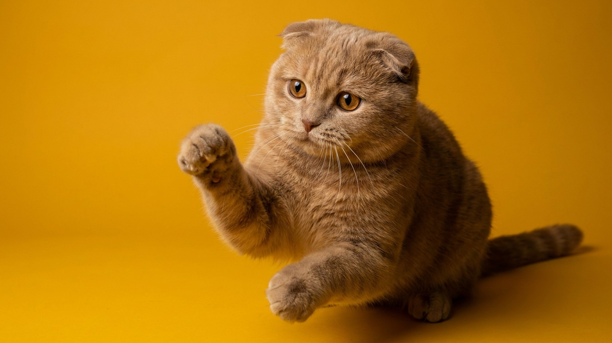

Шотландская вислоухая молчит, когда другие породы кричат, и держится рядом, не требуя внимания. Именно за этот спокойный, «человеко-ориентированный» характер её выбирают для квартиры. Но у породы есть несколько нюансов, которые стоит знать до того, как взять котёнка.
🐾 Дневник здоровья питомца — в кармане
Вес, прививки, симптомы и напоминания в одном приложении. AnimaLife следит за здоровьем питомца вместо вас.
Шотландская вислоухая — порода с низким уровнем тревожности. Она не устраивает истерик, когда хозяин уходит, и не будит в 5 утра требовательным мяуканьем. При этом она не безразлична: кошка следует за хозяином по квартире, выбирает место рядом, а не на коленях. Активность умеренная — любит играть, но не требует часовых сессий.
Прижатые уши шотландской вислоухой — результат генетической мутации, затрагивающей хрящевую ткань. Та же мутация может влиять на хрящи в суставах. Именно поэтому в профессиональном разведении вислоухую (fold) не вяжут с вислоухой: потомство fold×fold несёт двойную копию мутации, что существенно повышает риск проблем с опорно-двигательным аппаратом. Ответственные заводчики вяжут fold со страйтом (прямоухим шотландцем).
Это не значит, что каждая вислоухая кошка будет иметь проблемы с суставами. Но это означает: избегайте прыжков с высоты, следите за подвижностью и лёгкостью движений. Если кошка стала менее активной или избегает прыжков — повод обратиться к ветеринару, не ждать.
Прижатые уши создают специфическую среду: воздух циркулирует хуже, чем у прямоухих пород. Это требует регулярного осмотра раз в 1–2 недели. Чистка — только специальным лосьоном и ватным диском, не ватными палочками вглубь.
Шотландская вислоухая не требует большого пространства и не разрушает квартиру от скуки. Умеренная активность делает её комфортным компаньоном даже для людей с плотным графиком. Достаточно когтеточки, нескольких игрушек и 15–20 минут совместной игры в день.
🐾 Не уверены, что это опасно?
Опишите симптом в AnimaLife — AI-ветеринар за минуту подскажет, что в пределах нормы, а когда пора к врачу.
🐾 Понравился разбор?
Подпишитесь на канал — каждый день разбираем по одному тревожному симптому у кошек и собак: что в пределах нормы, а когда пора к врачу. Подпишитесь, чтобы не пропустить разбор, который может спасти здоровье вашего питомца.
Материал носит информационный характер и не заменяет очную консультацию ветеринара.